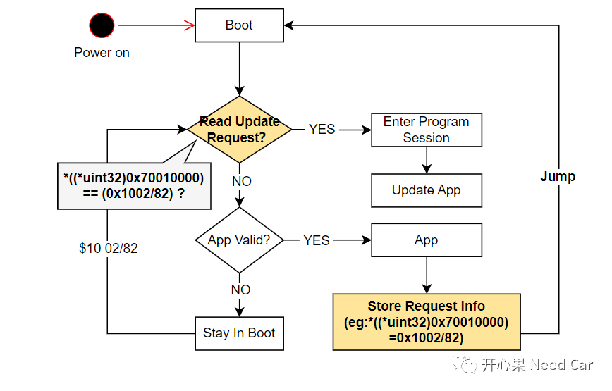
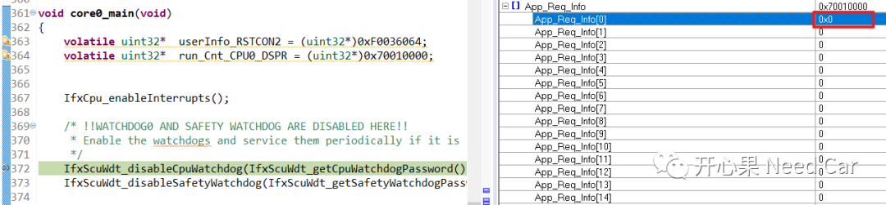
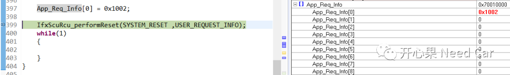
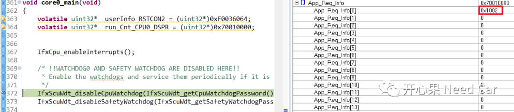

开心果 Need Car · 2022-10-18T09:08:00+08:00 · 微信原文
Boot开发：App诊断请求（$10 02/82）信息"传递"给Boot方式（二）中讨论：配置UCB（User Configuration Blocks），实现某些RAM区复位不清零。但是，此方式作用的RAM区域过大，工程中，Bootloader和Application交互的信息并不多，所以，不必操作整块RAM。本文继续沿着这个话题讨论第三种方式，也是工程中常用的方式：开辟一块RAM区（eg：1K），关联到自定义Section，实现软复位不清零。
如果要实现特定RAM区复位不清零目的，需要先解决第一个问题：“如何开辟一块自定义RAM区？”不同的硬件平台，划分段（Section）方式不同，本文基于TC3xx，HighTec编译器讨论，其他的平台类似，思路相同。
本文将App与Boot交互的信息放入自定义段".reset_No_Clc_RAM_Sec"，空间大小为80 Bytes，HighTec自定义段的方式如下所示：
uint32 App_Req_Info[20] = {0x00};
2、链接文件（*.lsl）添加自定义段
如果想使用自定义段，还需要在链接文件中添加自定义段，并映射到对应的RAM区，本文将自定义段.reset_No_Clc_RAM_Sec映射到dsram0区域（0x70000000H ~ 0x7003BFFFH），且指定起始位置（0x70010000），如下所示：
......dsram0 (w!xp): org = 0x70000000, len = 240K.reset_No_Clc_RAM_Sec 0x70010000:{PROVIDE(__reset_No_Clc_RAM_Sec_begin = .);KEEP(*(.reset_No_Clc_RAM_Sec*))PROVIDE(__reset_No_Clc_RAM_Sec_end = .);. = ALIGN(4);} > dsram0......
1、存储App请求$10 02

代码如下所示：
App_Req_Info[0] = 0x1002;2、执行软复位
App_Req_Info[0] = 0x1002;IfxScuRcu_performReset(SYSTEM_RESET ,USER_REQUEST_INFO);while(1){}
3、测试验证
Step1：软件启动，程序第一次跑到如下断点位置，App_Req_Info[0] = 0x0；



提示：如果Application程序使用的是Autosar架构，执行软复位动作，可以调用MCU的标准接口Mcu_PerformReset()。本文使用到的IfxScuRcu_performReset()接口属于英飞凌封装的MCAL接口。
往期精彩回顾